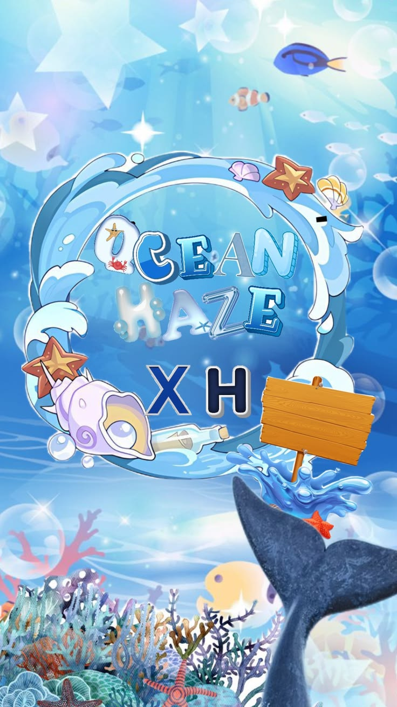

Filosofi Logo Kelompok 🌊 Ombak melambangkan semangat dan perjuangan dalam menghadapi setiap tantangan. Walaupun terkadang ada gelombang yang besar, kelompok tetap berusaha maju bersama. 🐚 Kerang dan bintang laut melambangkan keunikan setiap anggota. Setiap orang memiliki kemampuan dan karakter yang berbeda, tetapi perbedaan tersebut dapat saling melengkapi. 🐋 Ekor paus menjadi simbol kekuatan dan kebersamaan. Sebuah kelompok akan menjadi lebih kuat ketika setiap anggotanya saling membantu dan bekerja sama. 🪸 Terumbu karang menggambarkan keberagaman yang harmonis. Banyak bentuk dan warna yang berbeda dapat hidup berdampingan, seperti anggota kelompok yang memiliki kelebihan masing-masing. 🐟 Ikan-ikan melambangkan kerja sama dan kekompakan dalam mencapai tujuan. Setiap anggota memiliki peran, tetapi tetap bergerak menuju arah yang sama. ✨ Cahaya dan bintang melambangkan harapan, ide, dan tujuan. Kelompok diharapkan mampu menghasilkan ide-ide positif dan mencapai hasil terbaik. 🍾 Botol pesan melambangkan pesan dan kenangan yang tercipta selama menjalankan tugas bersama. Setiap pengalaman menjadi sesuatu yang berharga untuk diingat. 💙 Warna biru melambangkan ketenangan, kepercayaan, dan keharmonisan. Dalam kelompok, komunikasi dan rasa percaya menjadi dasar agar kerja sama berjalan dengan baik.